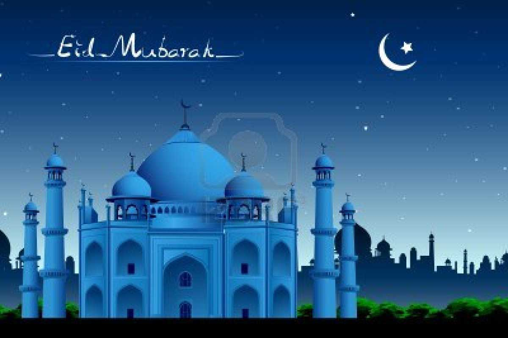
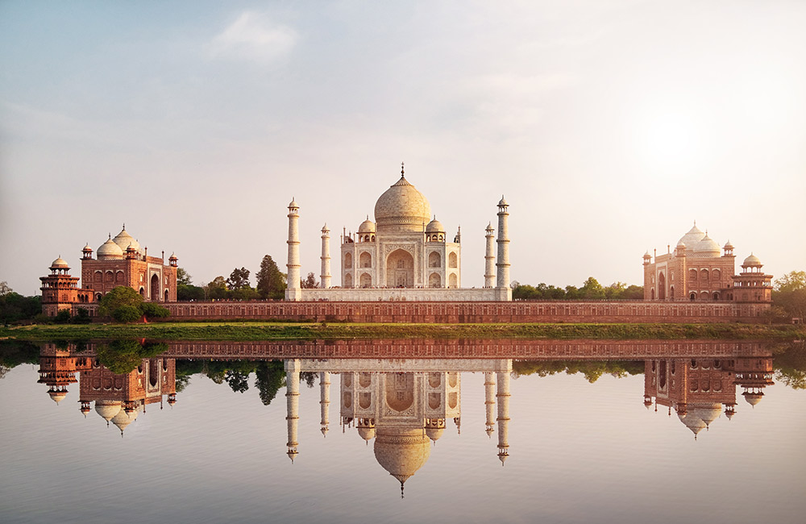
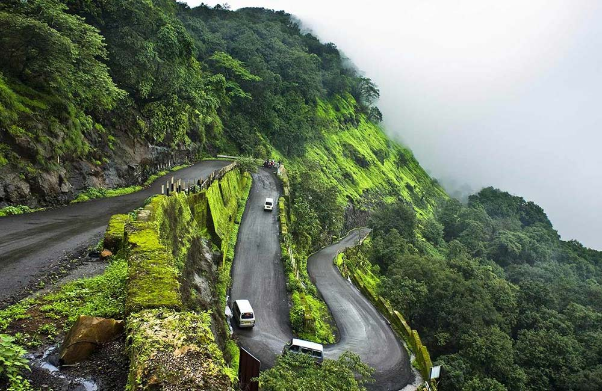

Incredible Indian Heritage
India represents “Unity in Diversity” . Our country is a mixture of cultures, regions, traditions, diversity in food, languages, etc. Our people of India are so polite, understanding and helping in nature. The national bird of India is Peacock and is very beautiful. India is so incredible and is full of colors and has the tiger as its national animal, hockey as its national game etc. The national language or mother tongue of our country is Hindi. Indians are also so talented and have shown very high growth. The I.T. sector of our country shows accelerating growth due to intelligent software engineers. India is the seventh-largest country by its geographical area and is located in South Asia. The beauty surrounds our country from each and every aspect. India is also known by two other names Bharat and Hindustan and the people of India are known as Indians. The national anthem of our country is “Jan Gan Man” and the national song of our country is “Sare Jahan Se Achcha”. India is a Democratic country where people themselves choose their leader and live with freedom i.e. they can do anything they wish to within the limits of the law. If any citizen of India tries to harm any other person, there are also rules and regulations to punish him in order to make him realize his mistake.Our country is also incredible because of its beautiful mountains, lakes, forests, seas, oceans, etc. Many foreigners each year visit India to see the beauty of our country that is its rich historical temples, its traditions, its language, its heritage etc.
REGIONS
North Region
North Region consists of the most incredible thing in the world that is The Himalayas which is the highest mountain in the world. This region also consists of the beautiful Kashmir covered with mountains. It consists of Uttar Pradesh which is mainly known as the land of Krishna, land of Rama etc. This region also consists of one of the wonders of the world i.e. Taj Mahal which people come to visit across the world.
Southern Region
This is the “Land of Nawabs”. It is famous for its festivals, food, and languages. The place is famous for its rice dishes. This region consists of cities like Kerala, Tamil Nadu and Karnataka etc.
East Region
East part of India consists of West Bengal, Jharkhand, Bihar, Odisha etc. The capital of West Bengal, Kolkata is the largest city of this section and is the metropolitan city and is the third’s largest city in the country. Kolkata is known for its sweetness and festival.
West Region
The West part of the country is really incredible as it is covered with sands and deserts. Rajasthan, Gujarat and Maharashtra are the three most amazing places in this region. The culture, the language, the traditions and the clothes of this region are incredible and you will love to visit this region.

CULTURE
India is a country that boasts of a rich culture. The culture of India refers to a collection of minor unique cultures. The culture of India comprises of clothing, festivals, languages, religions, music, dance, architecture, food, and art in India. Most noteworthy, Indian culture has been influenced by several foreign cultures throughout its history. Also, the history of India’s culture is several millennia old. Also, many foreign religions are present in India as well. These foreign religions include Abrahamic religions. The Abrahamic religions in India certainly are Judaism, Christianity, and Islam. Besides Abrahamic religions, Zoroastrianism and Bahá’í Faith are the other foreign religions which exist in India. Consequently, the presence of so many diverse religions has given rise to tolerance and secularism in Indian culture.


FESTIVAL
Festivals are the oldest rituals and traditions our countrymen follow to pay tribute to the almighty gods and goddesses. In fact, these celebrations are nothing but the symbols of peace and happiness. India is a diverse country with multiple religions and cultures conglomerated in a single form. This is why our Festivals draw a unique picture for the rest of the world to follow as a brilliant example of harmony. In India, we have three different types of Festivals. The national Festivals are those days when something remarkable happened that changed the course of history for our country. For instance, 26th January is celebrated as Republic Day. October 2 is Gandhi Jayanti, the birthday of Mahatma Gandhi, the father of the nation. These Festivals are called gazette holidays declared years back. These days, every public and private office celebrates and declares holidays for the employees. Independence Day is celebrated on August 15, 1947. On this day, we received independence from the colonial rule of the British Empire. We celebrate and pay tribute to the revolutionaries who led their lives to make us free from the shackles of British tyranny. Republic Day is celebrated gallantly in New Delhi, our capital. Our defence forces join hands to perform tricks and showcase their power to the public. These Festivals are celebrated across the country. The most prominent religious Festivals that we celebrate are Dussehra, Diwali, Eid-Ul-Fitr, Christmas, Guru Nanak Jayanti, Holi etc. Dussehra and Diwali are considered to be the prime religious Festivals of India. The states celebrating these Festivals get decorated like a new bride. New colourful dresses and tasty things to eat are the prime attractions for kids. During this time of the year, people of all ages and economic stature unite at a single place to worship the gods and goddesses. Every Indian religious festival has a story behind it. These stories carry a message for all the common men. Most of the Festivals convey the message of peace and the victory of good over evil. Every family prepares delectable preparations and invites guests, relatives and other family members. Families reunite, people enjoy for a few days and then get back with their monotonous lives. They again wait for another year eagerly for the religious Festivals to arrive with the wish to see their loved ones again.
DUSSEHRA
DIWALI
EID-UL-FITR
CHRISTMAS

DURGA PUJA

HOLI

FOOD
Food is the basic human need to stay alive. Moreover, it is the need of every living organism. Therefore it is important that we should not waste food. Our world consists of different types of cultures. These cultures have varieties of dishes of food in them. Thus, all the dishes have different taste. Furthermore, our nature provides us a variety of food. From fruits to vegetables, from Dairy food to seafood everything is available. Different countries have their own specialty of dishes. Therefore some of them are below:
ITALIAN
Italian Cuisines : Italian cuisines is one of the most popular cuisines around the world. Moreover, it is widely available in our India too. Dishes like pizza, pasta and lasagna own a special place in the hearts’ of people.Furthermore, restaurants like Dominos and Pizza hut are available all over the country. People of every age love the taste of these Italian dishes. Also, Italian dishes are famous for their’ cheese filling. Every dish is load with cheese which enhances the taste of these Italian dishes.
INDIAN
Indian cuisine : Indian cuisine is always filled with a lot of herbs and spices. Furthermore, the specialty of Indian dishes is it is always filled with curries. Whether veg or non-veg the dishes are in curry form. Moreover, Indian cuisine has so many varieties of food that has further branches. The Branch consists of Mughal cuisine which is mostly of non-vegetarian dishes. Also, almost every Indian love Muglia dishes.

CHINESE
Chinese Cuisine : Chinese cuisine in India is also very popular. There are many Chinese theme-based restaurants here. Moreover, in these restaurants Chinese are preferable chefs because they can only give the perfect Chinese blend. Chinese cuisines have a wide variety of dishes. Some of them are Chinese noodles, fried rice, Dumplings etc. Dumplings have a different name here. They go by the name of momos in India and people love the taste of it. These were some of the favorites of Indian people. Moreover, these are in almost every part of the city. You can find it anywhere whether be it in 5-star restaurants or at the side of the street as street foods.
PLACES

GOA

Famous for its pristine beaches, hippie vibes, laidback lifestyle, and vibrant parties, Goa
is
counted among the best holiday destinations in India. The union territory is frequented by
tourists year-round, especially in the winter season when the climate is pleasant, and the
entire place comes alive with Christmas and New Year celebrations. Goa is definitely one of
the
top 5 tourist places in India.
- Best Time to Visit: November to February
- Ideal Duration: 4-5 days
- Places to Visit in Goa: Palolem Beach, Dudhsagar Falls, Basilica of Bom Jesus, Aguada Fort, Baga Beach, Anjuna Beach, Calangute Beach, Shree Mangesha Temple, Immaculate Conception Church
- Things to Do in Goa: Beach hopping, water sports, shopping at flea markets, visiting Portuguese-style churches, enjoying the nightlife, tasting authentic Goan cuisine
AGRA

Say Agra and the first thing that comes to mind is the magnificent Taj Mahal, one of the
Seven
Wonders of the World. This beautiful city with its rich historical background is situated in
Uttar Pradesh, on the banks of River Yamuna. It is counted among the top tourist places in
India
for architecture lovers and history buffs, thanks to many amazing Mughal architectural
masterpieces that adorn the cityscape. No matter how many times you visit Agra, the charm of
the
Taj Mahal and other monuments will never fail to impress. The city is a treat for
shopaholics
and foodies as well.
- Best Time to Visit: October to March
- Ideal Duration: 2 days
- Best Places to Visit in Agra: Agra Fort, Jama Masjid, Abkar’s Tomb, Itimad-ud-Daulah’s Tomb, Mehtab Bagh, Gurudwara Guru Ka Taal, Dolphin Water Park, Wildlife Conservation and Care Centre
- Things to Do in Agra: Boat ride on Yamuna River, exploring popular monuments, watching the Light and Sound Show at Agra Fort, visiting Fatehpur Sikri, shopping at Kinari Bazaar, Subhash Bazaar and TDI Mall, relishing authentic Mughlai dishes and street foods
DELHI

New Delhi, the national capital of India, is one of the most cliched yet popular tourist
destinations in the country. The state has so much to offer that visiting it once or twice
is
not enough. Delhi is dotted with iconic Mughal monuments, temples, heritage sites,
performing
arts venues, colourful bazaars, shopping malls, planetariums, museums, and restaurants, so
there
is something for everyone here. Chandni Chowk, the oldest and busiest market in the country,
is
in Delhi. The city also houses many places of political importance, like Rashtrapati Bhawan,
Parliament of India, and India Gate.
- Best Time to Visit: October to March
- Ideal Duration: 3-4 days
- Best Places to Visit in Delhi: Red Fort, Humayun’s Tomb, Qutub Minar, Lotus Temple, Akshardham Temple, Purana Qila, Jantar Mantar, Gurudwara Bangla Sahib Ji, Nehru Park, Janpath Market
- Things to Do in Delhi: Explore Connaught Place, Sarojini Nagar Market and Hauz Khas Village, enjoy delicacies at Parathe Wali Gali, shop for handicrafts, souvenirs, antiques and more at Dilli Haat, experience Delhi’s nightlife, take a HoHo bus tour
MANALI

Situated in the Kullu Valley of Himachal Pradesh, Manali draws tourists with its natural
beauty
and tranquillity. The hill station is frequented by travellers from across the country
making it
one of the highly renowned vacation places in India, especially during the summer season
when
cities reel under the scorching heat. Snow-capped mountains, dense forests, riverine
valleys,
and sparkling streams add to the beauty of the hill station and make it one of the most
popular
holiday destinations in India. Another charming thing about Manali is that it showcases a
beautiful blend of rich cultural heritage and modernisation. Besides spending time in
serenity
and soaking in the beauty of the surroundings, you can engage in thrilling adventure
activities
here for a memorable vacation.
- Best Time to Visit: October to June
- Ideal Duration: 3-4 days
- Best Places to Visit in Manali: Manu Temple, Hidimba Devi Temple, Museum of Himachal Culture and Folk Art, Jogini Falls, Himalayan Nyinmapa Tibetan Buddhist Temple, Nehru Kund, Mall Road
- Things to Do in Manali: Paragliding, parachuting and horse riding at Solang Valley, mountain biking, skiing and sledge riding at Rohtang Pass, trekking, river rafting, ziplining, zorbing
OOTY

Ooty is one of the most frequented holiday destinations for tourists from Tamil Nadu,
Kerala,
and Karnataka. Given the fact that the southern part of India gets too hot during the summer
season, a trip to Ooty offers the much-needed respite from the heat. This picturesque and
serene
hill station is also a popular honeymoon destination among couples. Ooty offers stunning
views
of the Nilgiri Hills and lush green landscapes dotted with alpine woods, clear lakes,
emerald
green tea estates, and colourful blossoms. The hill station also houses the popular Nilgiri
Mountain Railway which was declared a UNESCO World Heritage Site in 2005.
- Best Time to Visit: October to June
- Ideal Duration: 2-3 days
- Best Places to Visit in Ooty: Ooty Botanical Gardens, Dolphin’s Nose, Rose Garden, Avalanche Lake, Doddabetta Peak, St Stephan’s Church, Thread Garden, Kalhatti Falls, Annamalai Temple, Kamraj Sagar Lake, Catherine Falls
- Things to Do in Ooty: Boating, birdwatching, enjoying a picnic and the nature photography at Ooty Lake and Emerald Lake, going on a toy train ride, visiting tea gardens at Kotagiri, trekking
LONAVALA AND KHANDALA

Perched at a height of 622 metres above sea level, Lonavala and Khandala are twin hill
stations
in the state of Maharashtra. Thanks to their pleasant weather conditions and proximity to
Mumbai
and Pune, the hill stations are frequented by Mumbaikars and Punekars year-round. Both
Lonavala
and Khandala come to life during the monsoon season when lush greenery, sparkling lakes and
milky-white waterfalls add to the beauty of the landscape. Besides being a nature lover’s
delight, the hill stations are quite popular among adventure enthusiasts.
- Best Time to Visit: December to February; July to September
- Ideal Duration: 2-3 days
- Best Places to Visit in Lonavala and Khandala: Tiger’s Leap, Rajmachi Fort, Aamby Valley, Lohagad Fort, Bhushi Dam, Sunil’s Celebrity Wax Museum, Visapur Fort, Tikona Fort, Narayani Dham Temple
- Things to Do in Lonavala and Khandala: Exploring the popular rock-cut Bhaja and Karla Caves, enjoying a fun-filled day at Imagicaa Entertainment Park, planning a picnic at Lonavala Lake, exploring local shops
SHILLONG

Known for pleasant weather conditions and picturesque locations, Shillong in Meghalaya is
one of
the most cliched yet highly frequented tourist destinations in India. The hill station is
popularly known as Scotland of the East, thanks to the rolling hills, gushing waterfalls and
lovely landscape that reminded European colonists of stunning Scotland. Shillong also boasts
crystal-clear lakes, high mountain peaks and amazing golf courses, museums and cafes. What’s
more, the distinct culture, delectable local cuisines and amazing shopping hubs promise a
fun-filled vacation every time.
- Best Time to Visit: September to May
- Ideal Duration: 4-5 days
- Best Places to Visit in Shillong: Umiam Lake, Elephant Waterfalls, Shillong Peak, Cathedral of Mary Help of Christians, Police Bazaar, Don Bosco Museum, Sweet Falls, Phan Nonglait Park, Spread Eagle Falls, Lady Hydari Park, Sohpetbneng
- Things to Do in Shillong: Picnicking, shopping, trekking, cliff jumping, zip-lining, river rafting
VARANASI

Situated on the banks of River Ganga in Uttar Pradesh, the holy city of Varanasi or Banaras
is
counted among the most sacred places in India. The city is known for some of the most
revered
temples and Ghats in the country and is frequented by devotees and tourists from across the
world. Varanasi, one of the oldest cities in the world, is also popular as the home of Lord
Shiva and Goddess Parvati. It is believed that taking a dip in the Ganges can wash away all
your
sins. The bustling city is popular for its museums, authentic Banarasi food, Banarasi sarees
and
handicrafts as well.
- Best Time to Visit: November to February
- Ideal Duration: 2-3 days
- Best Places to Visit in Varanasi: Shri Kashi Vishwanath Temple, Dashashwamedh Ghat, Manikarnika Ghat, Ramnagar Fort, Shri Durga Temple, Kaal Bhairav Temple, Sarnath Museum, Sankatmochan Temple
- Things to Do in Varanasi: Seeking blessings at temples, enjoying delectable Banarasi food and sweetmeats, shopping for Banarasi silk sarees at Thateri Bazaar, Vishwanath Gali and Temple Bazaar
KOLKATA
Known as the City of Joy and rightly so, Kolkata is another holiday destination that is
frequented by tourists from across the country. A beautiful blend of art, culture, fashion
and
literature, Kolkata is the perfect getaway for different types of travellers. What’s more,
it is
a delight for foodies, shopaholics and nightlife lovers as well. This vibrant city is a
perfect
example of old-world charm meeting modernisation. From historical monuments, temples and
trams
to modern science museums, gigantic shopping malls and fine dining restaurants, Kolkata has
everything for a wonderful vacation.
- Best Time to Visit: October to February
- Ideal Duration: 4-5 days
- Best Places to Visit in Kolkata: Victoria Memorial, Howrah Bridge, Science City, Kalighat, Dakshineshwar Kali Temple, St Paul’s Cathedral, Belur Math, Eden Gardens, Indian Museum
- Things to Do in Kolkata: Enjoying water rides and rollercoasters at Nicco Park, spending some peaceful time at Eco Park, trying lip-smacking street food, exploring Park Street
SIKKIM

A jewel in the north-eastern part of India, Sikkim is one of the most beautiful and serene
holiday destinations you will ever find. Although a vacation in Sikkim sounds cliched, the
hill
station is a popular choice among nature enthusiasts and peace seekers. From snow-capped
mountains and colourful meadows to thick woodlands and exotic flowers, there are so many
things
that add a distinctive charm to this hill station. And that’s not all, the town also houses
some
pretty monasteries, stupas and Hindu shrines that make it a religiously significant place
for
the Hindus and Buddhists.
- Best Time to Visit: March to June; October to December
- Ideal Duration: 4-5 days
- Best Places to Visit in Sikkim: Gangtok, Nathula Pass, Tsomgo Lake, Kanchenjunga Base Camp, Pelling, Zuluk, Gurudongmar Lake, Rumtek Monastery, Namchi, Jawaharlal Nehru Botanical Garden
- Things to Do in Sikkim: Riding cable cars, river rafting, paragliding, trekking, shopping, mountain biking, camping, riding helicopter over Gangtok Valley, riding yak at Tsomgo Lake
LEH LADAKH

Leh Ladakh is a mesmerizing region renowned for its breathtaking landscapes, ancient
monasteries, and vibrant Tibetan-Buddhist culture. It is one of the highest tourist places
in
India with an altitude of 3500 m above sea level. Whether it’s the breathtaking Pangong Tso
Lake, the mystical Nubra Valley, or the world’s highest motorable pass, Khardung La, Leh
Ladakh
offers a plethora of scenic wonders to explore. Adventurers can indulge in thrilling
activities
like trekking, motorbiking, river rafting, and camel safaris, while spiritual seekers can
immerse themselves in the peaceful atmosphere of monasteries and spiritual retreats.
- Best Time to Visit: May to September
- Ideal Duration: 7 to 10 days
- Best Places to Visit Leh Ladakh: Pangong Tso Lake, Nubra Valley, Khardung La Pass, Leh Palace, Magnetic Hill, Hemis Monastery, Tso Moriri Lake, Lamayuru Monastery, Zanskar Valley
- Things to Do: Trekking, Motorbiking, Monasteries, River Rafting, Camel Safaris
DARJEELING

A prized jewel in the Himalayan Range, Darjeeling is the perfect getaway for nature lovers
and honeymooners. Offering stunning views of the world’s third-highest peak – Kanchenjunga,
Darjeeling is a favourite among summer travellers and is among the best holiday destinations
in India. It is surrounded by emerald-green slopes of tea plantations and is home to some
beautiful botanical gardens, monasteries, parks, and vantage points.
- Best Time to Visit: April to June
- Ideal Duration: 4 to 6 days
- Best Places to Visit in Darjeeling: Tiger Hill, Batasia Loop, Nightingale Park, Rock Garden, Singalila National Park, Peace Pagoda, Padmaja Naidu Himalayan Zoological Park, Happy Valley Tea Estate
- Things to Do: Enjoy the toy train ride, take a ride on the ropeway, explore tea gardens and monasteries, trek, and river rafting